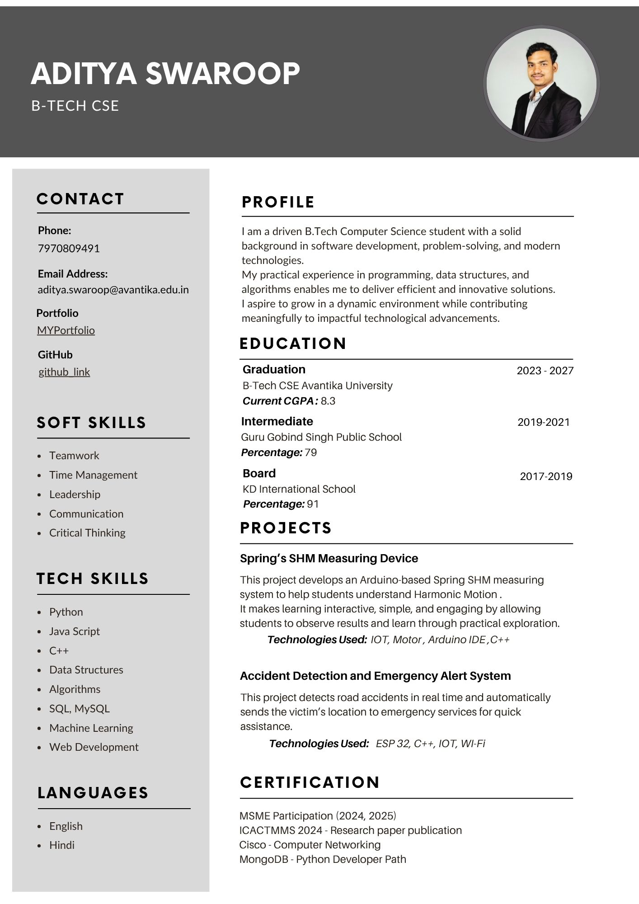

RESUME OVERVIEW
Academic background, skills, and project highlights in one place.
PROFILE
I, Aditya Swaroop, a B.Tech Computer Science student with hands-on experience in software development, embedded systems, and UI/UX design. I enjoy solving real-world problems by creating solutions that are practical, efficient, and user-friendly.
Education
- B.Tech CSE — Avantika University (2023–2027)
- Intermediate — Guru Gobind Singh Public School (2019–2021)
- Board — KD International School (2017–2019)
Spring's SHM Measuring Device
An Arduino-based project that helps students learn harmonic motion through measurement, visualization, and classroom-friendly experimentation.
Accident Detection and Emergency Alert System
A safety-focused IoT system that detects accidents in real time and sends emergency location alerts for faster help and support.
Portfolio Website
A responsive personal site built to showcase projects, certifications, contact details, and resume content in a clean linked experience.
RESUME PREVIEW
